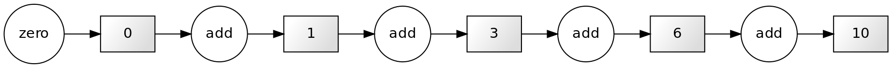
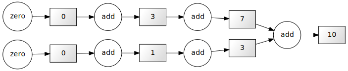

introductionCommon problemsOverview and rationaleWhy Python?What is parallel computing?
Image 1 of 1: ‘boxes and arrows in sequential configuration’
Serial computation
Image 1 of 1: ‘boxes and arrows with two parallel pipe lines’
 Parallel computation
Parallel computation
Image 1 of 1: ‘boxes and arrows’
 serial execution
serial execution
Image 1 of 1: ‘boxes and arrows’
parallel execution
Image 1 of 1: ‘boxes and arrows showing dependencies between tasks’
There are two ‘workers’: the cook and the stove. 
Image 1 of 1: ‘diagram’
 Shared vs. Distributed memory architecture: the
crucial difference is the bandwidth to shared memory
Shared vs. Distributed memory architecture: the
crucial difference is the bandwidth to shared memory
Image 1 of 1: ‘screenshot of system monitor’
 System monitor
System monitor
Image 1 of 1: ‘showing very high peak for numpy, and constant low line for dask’
 Memory performance
Memory performance
Image 1 of 1: ‘showing that using more cores can also make things slower’
 Timings against number of cores
Timings against number of cores
Image 1 of 1: ‘the area of a unit sphere contains a multiple of pi’
 Computing Pi
Computing Pi
Image 1 of 1: ‘boxes and arrows’
 Dask workflow graph
Dask workflow graph
Image 1 of 1: ‘a gather pattern’
 {.output alt=“boxes and arrows”}
{.output alt=“boxes and arrows”}
Image 1 of 1: ‘boxes and arrows’
 A map operation.
A map operation.
Image 1 of 1: ‘boxes and arrows’
 A reduction.
A reduction.
Image 1 of 1: ‘colorful rendering of mandelbrot set’
 The whole Mandelbrot set
The whole Mandelbrot set
Image 1 of 1: ‘rendering of mandelbrot zoom’
 Zoom in on Mandelbrot set
Zoom in on Mandelbrot set
Image 1 of 1: ‘performance curves’
 Benchmarks
Benchmarks
Image 1 of 1: ‘colorful rendering of a Julia set’
 Example of a Julia set
Example of a Julia set